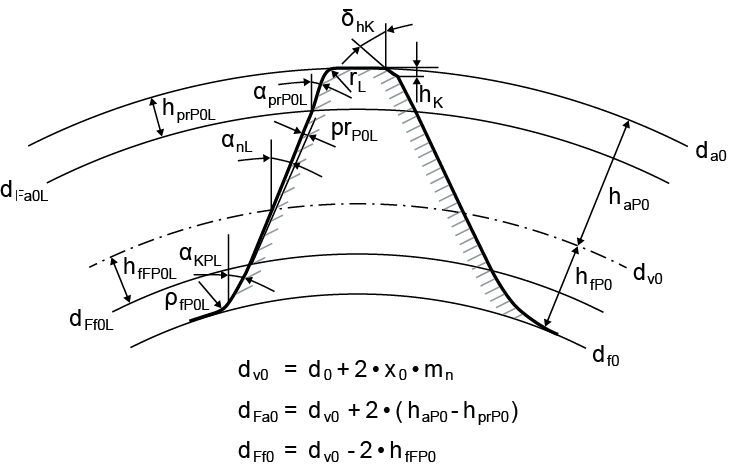

|
|
|


刀具：插齿刀
单击插齿刀名称旁边的加号按钮，从列表中选择用于内齿轮和外齿轮的插齿刀。此处列出了 DIN 1825、1826 和 1827 中规定的插齿刀。使用此窗口的方式与 窗口相同，参见 刀具：滚刀。默认情况下，列表只显示与所选模数、压力角和螺旋角匹配的刀具。

图 15.28：用于刀具配置的参考齿廓：插齿刀
用于非对称齿轮的插齿刀：

图 15.29：用于配置刀具的非对称齿轮参考齿廓：插齿刀
选择 以直接定义您自己的插齿刀：
- KISSsoft 可提示刀具的齿数 z0。如果齿数太小，可能无法加工圆柱齿轮的齿顶成形圆和/或齿根成形圆。如果齿数太大，可能在加工过程中发生碰撞。
- 插齿刀的变位系数 x0 通常是未知的。但是，它会影响所生成齿轮的齿根圆。此值与齿数一起自动设置。
- 插齿刀齿顶通常采用圆角或倒角形式。齿顶形式在标准中未定义。为保险起见，文件中设置了 mn/20 的倒角。但是，如有必要，您应检查此值。
- 插齿刀的齿顶高系数 h*aP0 定义了插齿刀的齿顶高，进而决定了插齿刀的齿顶圆和齿轮的齿根圆。常用值为 1.25。
- 插齿刀的齿根高系数 h*fP0 定义了插齿刀的齿根高，进而决定了切顶刀具的齿顶圆。此值通常为 1。对于非切顶刀具，刀具与齿轮齿顶圆之间必须留有一定的间隙，软件会对此进行检查。当参考齿廓的齿顶高为 1 时，常用值为 1.2。
- 插齿刀的齿根圆角半径系数 ϱ*fP0 定义了刀具齿根处的半径。对于切顶刀具，齿根圆角在大多数情况下会在齿轮上切削出齿顶圆角。此输入值仅针对切顶刀具显示。
- 凸起高度系数 h*prP0 定义了凸起长度（从齿顶高量起）。凸起用作人工根切，以防止产生磨削缺口。
- 凸起角 α*prP0 通常小于压力角。如果输入 0，则不存在凸起。
- 在计算重合度时，凸起在达到某一值之前不予考虑，因为对于齿廓修形假定存在受载接触。要设置考虑凸起和有效直径处齿根齿面挖根的阈值，请选择“计算 > 设置”（参见"计算"章）菜单项。
- 齿根齿形高度系数 hFfP0* 定义了具有压力角 αn 的刀具渐开线的终点。该高度从刀具参考线量起。
- 斜坡角 αKP0* 定义了刀具中存在的斜坡齿面或修形。长度使用齿根齿形高度系数确定。该角度大于压力角 αn。如果输入值“0”，则忽略此部分。
- 在计算直径和重合度时，此处也考虑了用于凸起的阈值（参见"计算"章）。
- 齿轮参考齿廓的齿顶高系数 haP *，其常用值 haP * = 1，定义了非切顶刀具的齿轮齿顶圆。该值可通过换算齿顶圆值来计算。
通过单击 按钮（位于数据源输入字段旁边），可将插齿刀写入数据库（仅当插齿刀定义为自定义输入时）。一旦进入数据库，该插齿刀便可在数据源下选择。
Tool: Pinion type cutter
Click the Plus button next to the pinion type cutter designation to select a pinion type cutter for internal and external gears from a list. Pinion type cutters as specified in DIN 1825, 1826 and 1827 are listed here. You use this window in the same way as the window, Tool: Hobbing cutters. By default, the list only displays tools that match the selected module, pressure angle and helix angle.
Figure 15.28: Reference profile for tool configuration: Pinion type cutter
Pinion type cutter for asymmetrical gears:
Figure 15.29: Reference profile for asymmetrical gears for the configuration tool: Pinion type cutter
Select to directly define your own pinion type cutter:
- KISSsoft can prompt the number of teeth z0 for the cutter. If the number of teeth is too small, it may not be possible to manufacture the cylindrical gear tip form circle and/or root form circle. If the number of teeth is too great, it may cause collisions during manufacture.
- The pinion type cutter profile shift coefficient x0 is often unknown. However, it does influence the root circle of the resulting gear. This value is set automatically, together with the number of teeth.
- A pinion type cutter tip often takes the form of a radius or a chamfer. The tip form is not defined in the standards. To be on the safe side, a chamfer of mn/20 was set in the files. However, you should check this value if necessary.
- The pinion type cutter addendum coefficient h*aP0 defines the pinion type cutter addendum that in turn determines the pinion type cutter tip circle and the gear root circle. A usual value is 1.25.
- The pinion type cutter dedendum coefficient h*fP0 defines the pinion type cutter dedendum height that in turn determines the tip circle for a topping tool. A usual value for this is 1. In a non-topping tool, there has to be a certain amount of clearance between the tool and the gear tip circle, which the software checks. 1.2 is a usual value for an addendum of the reference profile of 1.
- The root radius coefficient of the pinion-type cutter ϱ*fP0 defines the radius at the cutter root. In a topping tool, the root radius cuts a tip rounding on the gear in most cases. The input value is only displayed for a topping tool.
- The protuberance height coefficient h*prP0 defines the protuberance length, measured from the addendum. The protuberance is used as an artificial undercut to prevent a grinding notch from being created.
- The protuberance angle α*prP0 is usually smaller than the pressure angle. If 0 is input, no protuberance is present.
- When calculating the contact ratio, protuberance is not taken into account until it reaches a certain value because a contact under load is assumed for profile modifications. To set the threshold value that takes into account protuberance and buckling root flank for active diameters, select the Calculation > Settings (see chapter Calculations)menu option.
- The root form height coefficient hFfP0* defines the end of the tool involute with the pressure angle αn. The height is measured from the tool reference line.
- The ramp angle αKP0* defines a ramp flank or a profile modification that is present in the cutter. The length is determined using the root form height coefficient. The angle is greater than the pressure angle αn. If you enter the value "0", this part will be ignored.
- The threshold value used for protuberance is also taken into consideration here when calculating the diameter and the contact ratio (see chapter Calculations).
- The addendum coefficient of the gear reference profile haP * with the usual value of haP * = 1 defines the gear's tip circle for a non-topping tool. The value can be calculated by converting the tip circle value.
By clicking on the button (next to the data source input field), the hobbing cutter can be written into the database (only if the hob is defined as own input). Once it is in the database, the hob is available for selection under Data source.